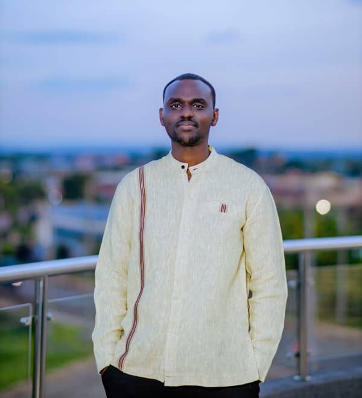

Rwandan Youth Leadership in the AY Movement!
The Rwandan Youth Leadership Movement is growing—one young leader at a time. Mugisha Bruce, a second-year law student in Rwanda, is one of them. He found the African Youth Movement (AYM) while searching online for youth groups focused on Africa. What pulled him in was simple: a chance to serve, lead, and solve problems with other young people.
Bruce’s story helps explain why the Rwandan Youth Leadership Movement matters. He grew up in a country shaped by both failure and strength in leadership. Rwanda’s past—the genocide of 1994—is a hard truth. Bruce didn’t live through it, but he studied it in school. He learned how bad leadership led people to do terrible things. He also saw how good leadership helped rebuild the country. That contrast stuck with him.
At school, Bruce started learning what real leadership looks like. Not the kind you see on TV. Not speeches or power. Real leadership, he says, is influence. It starts with you. If you can’t lead yourself, you can’t lead anyone. That lesson shaped him early. It still drives him.
He believes the Rwandan Youth Leadership Movement must focus on action. He doesn’t want to be the kind of leader who sits in an office while others work. If his team is helping build a house, he wants to carry bricks too. When he’s class rep, he joins the assignments, not just gives instructions. That’s how trust is built.
Another key part of how Bruce leads is delegation. If he’s overwhelmed, he asks others to step up. That’s not weakness. That’s believing in your team. Bruce wants to help others believe they can lead too. Leadership shouldn’t be for just a few.
The Rwandan Youth Leadership Movement also needs unity. Rwanda has people from different areas, different backgrounds. At school, Bruce saw how students from urban places and rural places would sometimes stay apart. So he created group activities where each side could learn from the other. Farming skills from rural students. Computer skills from urban ones. It worked. They started to see each other differently.
Bruce speaks in public often. He uses that space to raise youth issues and offer ideas. He talks with high school students. He joins panel discussions. He shares what he knows and listens to others. That’s another way the Rwandan Youth Leadership Movement spreads—through voice, through conversation.
He also uses tech to teach. With little money, he runs online sessions about leadership and public speaking. He uses Google Meet and makes simple presentations. That’s all it takes. A laptop. A bit of internet. A willing mind. He wants to teach digital skills to kids in rural areas who’ve never touched a laptop. That’s his business idea too—teach ICT and help others catch up with a changing world.
If Bruce gets to lead the AYM chapter in Rwanda, he already knows what to do. First, understand the mission. Then, gather passionate youth from all districts. Partner with other groups. Inform the Ministry of Youth. Set up WhatsApp groups. Host regular meetings. And most of all, stay focused on real issues—like entrepreneurship and self-employment.
The Rwandan Youth Leadership Movement is about more than events and slogans. It’s about doing the work. Bruce says it best when he talks about integrity. When pressure comes, don’t cut corners. Do your best. Be honest. Ask for help if needed. But never lie to get ahead.
He practices what he calls servant leadership. That means listening. Going to people. Asking real questions. Understanding what they face. Only then can a leader actually help.
He also knows conflict is part of the job. One time, two classmates argued over a copied assignment. Instead of reporting them, Bruce brought them together. Asked questions. Helped them work it out. What he learned was simple: people want to cooperate, if they’re given the chance.
He balances school and activism by planning. Law classes take most of the day. But evenings are open. So he uses that time. No big secret. Just focus.
What legacy does Bruce want to leave? He wants to be the kind of leader who helped others rise. Who didn’t forget where he came from. Who gave more than he took. And who ensured young people believed they had something valuable to offer, because they do.
The Rwandan Youth Leadership Movement is growing—not through money or fame, but through voices like Bruce’s—young, clear, and determined.